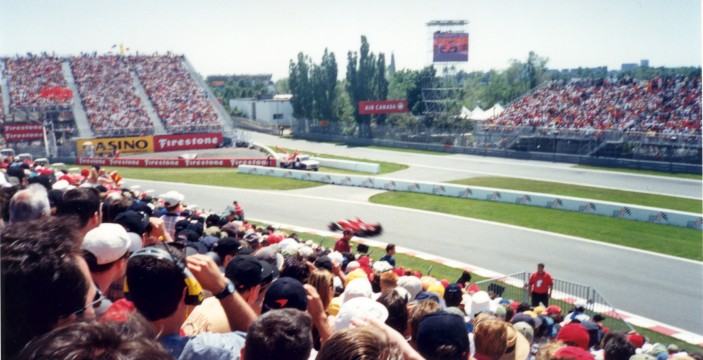
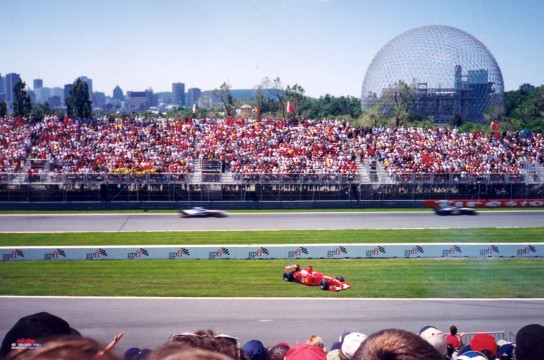
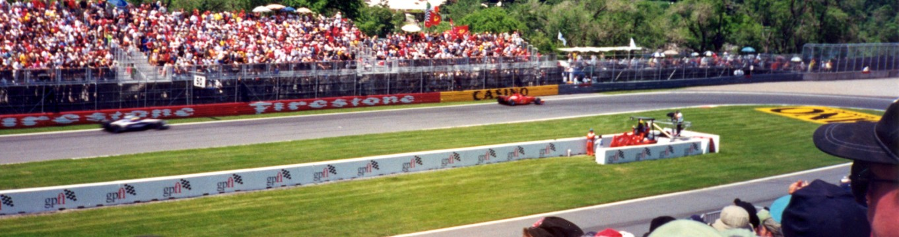
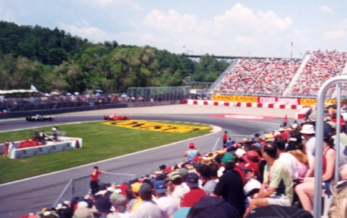

Circuit Gilles Villeneuve, Montréal, Quebec, Canada Photographs taken: 10th June, 2001 |
||||||
|  |  |  |  | |||
These photographs were taken from the east grandstand at the hairpin during the Formula 1 Canadian Grand Prix of 2001. |
||||||
Photographs ©Fred Young. Reproduced here with kind permission.